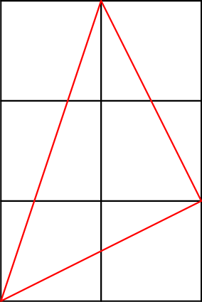
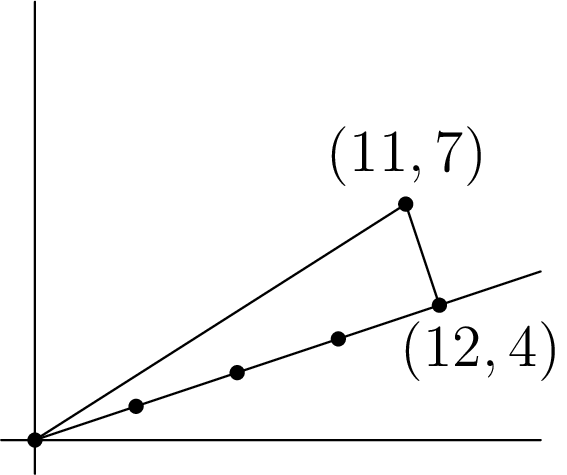

November 10th
Today I learned some perspectives on those $\arctan$ facts that pop every once in a while. The motivating example is to note the following image.
Considering the angles in the bottom-left right angle, we see that $\arctan\left(\frac13\right)+\arctan\left(\frac11\right)+\arctan\left(\frac12\right)=\frac\pi2.$ Of course, there are lots of ways to prove this statement; e.g., straight-up bashing out the trigonometry with the tangent-addition formula will do the trick. There's also a nice proof with complex numbers by noting $\arctan\left(\frac1n\right)$ is the argument of $n+i.$ So computing\[(3+i)(2+i)=5+5i\]shows that $\arctan\left(\frac13\right)+\arctan\left(\frac12\right)=\arctan\left(\frac11\right).$
Anyways, the graphical solution also generalizes as a sort of an elementary version of the complex-numbers proof. Perhaps it's not as clean, but it accomplishes much the same tasks. For example, let's suppose we want to compute\[\arctan\left(\frac13\right)+\arctan\left(\frac14\right).\]For this, we use slopes, generalizing the motivating example. Note $\arctan\left(\frac13\right)$ is the angle of the line $y=\frac13x$ with the $x$ axis. To add angles, we need to place a line on top of this. Well, look at the following triangle.
The triangle here is right with adjacent side four times its opposite. It follows that this angle is $\arctan\left(\frac14\right),$ and in fact we have shown geometrically that\[\arctan\left(\frac13\right)+\arctan\left(\frac14\right)=\arctan\left(\frac{11}7\right).\]We could continue to add more angles. To demonstrate a bit further what we can do with this, suppose we want to add an angle to this get $\arctan\left(\frac11\right)=\frac\pi4.$ Well, supposing it is $\arctan\left(\frac1m\right)$ for some real $m,$ we need to stack this angle on top of the triangle given above.
We start from the point $(11,7).$ Extending the base of the new right triangle to have side length $m$ times the length of $\langle11,7\rangle$ takes us to $(11m,7m),$ and then to complete the right triangle, we have to go up by $\langle-7,11\rangle,$ taking us to\[(11m-7,7m+11).\]Now, if these angles add to $\frac\pi4,$ then the above point needs to live on $y=x.$ It follows that $11m-7=7m+11,$ which implies $m=\frac92.$ Thus, we get that\[\arctan\left(\frac13\right)+\arctan\left(\frac14\right)+\arctan\left(\frac29\right)=\frac\pi4,\]which is reasonably cute.